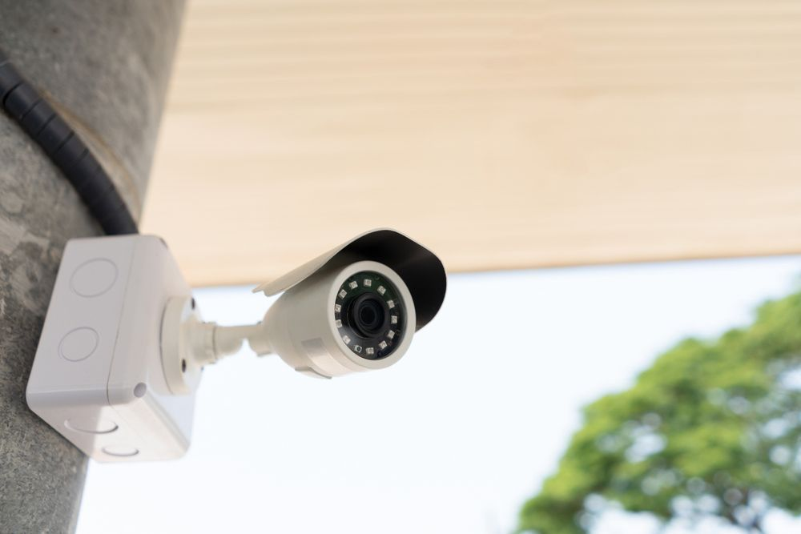
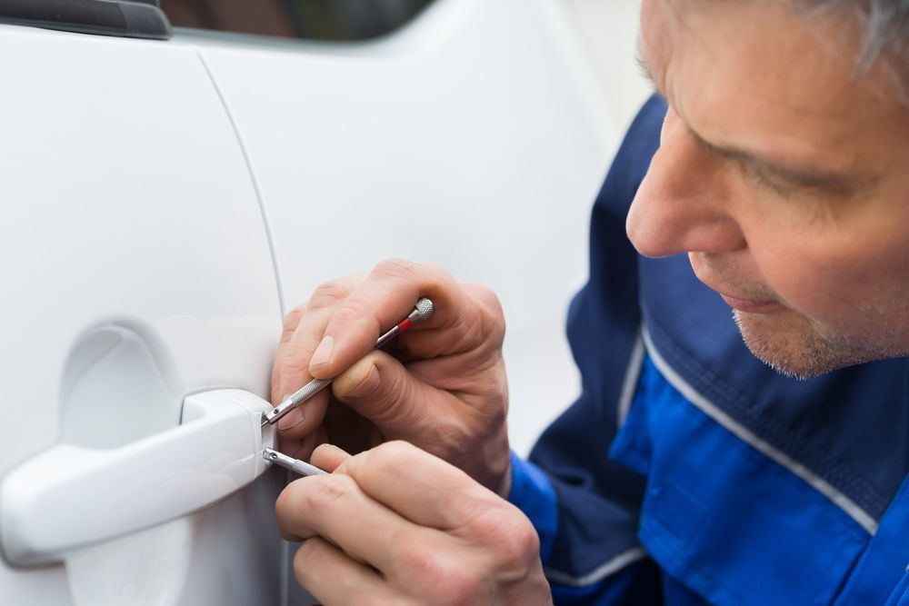

On this page
AT A GLANCE
Our team at SPL Security Solutions have years of experience providing tailored security solutions to the residents and business owners of Mermaid Beach and Mermaid Waters.
Get A Free Quote Now!

Security for Homes, Cars & Businesses
Our team at SPL Security Solutions have years of experience providing tailored security solutions to the residents and business owners of Mermaid Beach and Mermaid Waters. Whether you require basic key cutting services, advanced high-security lock systems or access control solutions for your property, our comprehensive range of locksmith services have you covered. With a commitment to providing professional and reliable services, we ensure your property remains secure at all times.
Our experts are equipped with the latest technology and knowledge to address even the most complex security challenges and provide unbeatable solutions tailored to your individual needs. We work closely with our clients from consultation through to installation and maintenance, ensuring their security requirements are met every step of the way.
For more information on our comprehensive range of locksmith services, call (07) 5588 8111.
Mermaid residents can take advantage of our residential locksmith services to secure their homes effectively. From state-of-the-art lock installations and repairs to strategic rekeying, we have your needs covered. Duplication of keys and emergency lockout services are also available, ensuring you're well-prepared in any situation.
In Mermaid, our commercial locksmith services provide businesses with peace of mind and enhanced security. We install high-security locks, master key systems and access control solutions to ensure only authorised personnel have access to specific areas of your property. Our team is also available for emergency assistance and can conduct security assessments to identify vulnerabilities.
If you're locked out of your car in Mermaid, our automotive locksmith services are here to help. Our expert team can quickly assist with key replacements, transponder key programming and ignition repair or replacement, providing efficient solutions to get you back on the road. We also offer 24/7 emergency assistance for those in urgent need of our services.
Our restricted key systems are customised to meet the specific security requirements of each client in Mermaid. By preventing the duplication of keys without authorisation, we provide an effective solution to control access and protect against unauthorised entry. This is an ideal security measure for businesses and organisations looking to secure their premises and safeguard their assets.
We provide our Mermaid clients with access to a quality range of safes tailored to protect against theft, fire and even flood damage. Our safes are accompanied by a suite of services including expert installation, maintenance and unlocking assistance, ensuring your valuables, takings and important documents are securely safeguarded at all times.
Protect your property with our integrated security systems in Mermaid. Our solutions include CCTV cameras, alarm systems, access control and intercoms to monitor and detect potential threats. We offer expert advice on the most effective combination of products for optimal protection and ease of use, tailored to meet your specific security needs and budget.
Our lock hardware options in Mermaid include heavy-duty deadbolts, tamper-proof locks and custom-designed smart locks. These products ensure maximum protection while maintaining ease of access and usability.
Our door hardware in Mermaid includes durable hinges, advanced closers and elegant handles. These options provide enhanced door security while adding a modern touch to your property.
Whether modern or traditional, our architectural door hardware selection offers durable fire-rated solutions, smooth-operating closers, and stylish handles for every project in Mermaid.
24/7 Emergency Locksmith Services
When emergencies happen, you need a trusted locksmith service that can respond quickly. At SPL Security Solutions, we provide 24/7 emergency services to residents in Mermaid and surrounding areas. No matter the time of day or night, our team is ready to assist with the event of a lockout, providing re-entry services, key cutting and more.
We also understand the importance of securing your property after a break-in, which is why we offer security assessments and repairs to fortify your property against recurring threats. Our mobile vans come equipped with the latest technology and tools so we can provide on the spot lock replacements and more.

Contact Details
24/7 Emergency Locksmiths or Security Tech
Trading Hours
Retail Shop

Frequently Asked Questions
-
What are the benefits of keyless entry systems?
Keyless entry systems eliminate the need for physical keys, reducing the risk of lost keys and lockouts. They facilitate easy entry with codes, fobs or biometrics. In commercial settings, they can offer enhanced security through custom access rights and activity monitoring.
-
What are the signs my lock needs replacing?
If your lock is hard to turn, doesn’t lock properly or shows visible signs of wear and tampering, it may need replacing. Upgrading to a lock with advanced security features is also recommended if your current lock is outdated.
Locksmith & Security Solutions Gold Coast, Brisbane & Northern NSW